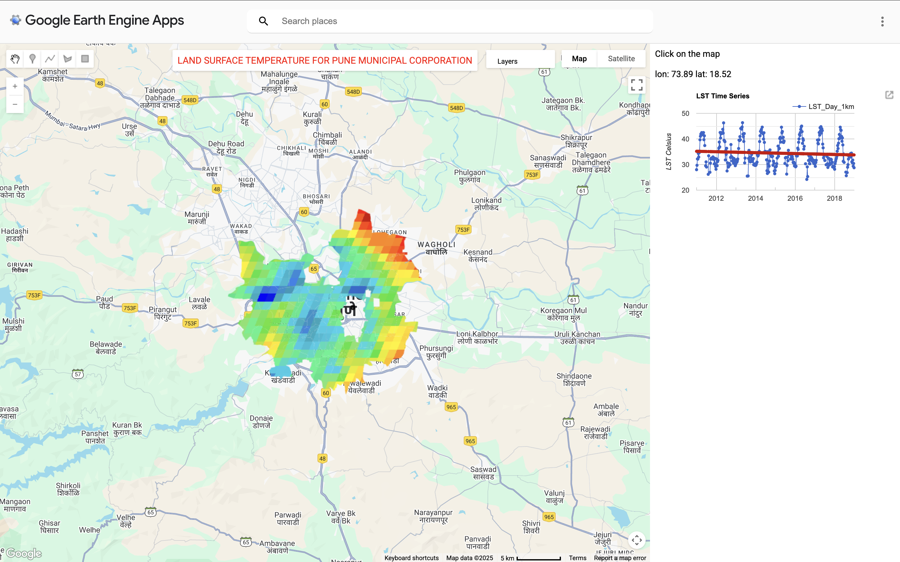
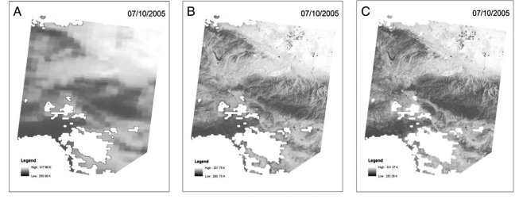
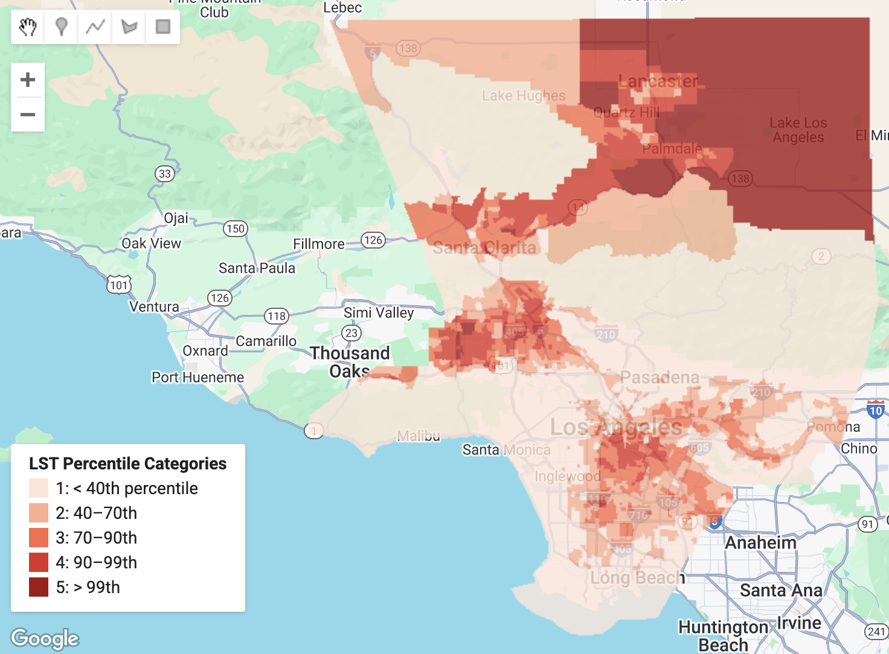

8 Week 8 - Temperature
8.1 Summary:
In week 5 we covered temperature and policy as my group in CASA0025 are interested in producing a heat based application, I was particularly interested in the temperature aspect.
One thing that I have learned from working in local government is that analysis needs to have a purpose. I can’t be researching something just because it is interesting as that is not a good use of time or the council’s money.
The problem in this case is the Urban heat Island (UHI) Effect - this is where urban areas obtain comparatively higher atmospheric and surface temperatures than surrounding rural areas.
There are two main reasons for UHI’s:
More dark surfaces that retain heat
Less vegetation that cools the environment (evapotranspiration and solar blocking).
However many serious impacts on people and the environment:
The body’s inability to regulate internal temperature and eliminate heat gain increases the risk of heatstroke.
The strain put on the body as it tries to cool itself also stresses the heart and kidneys, potentially worsening health risk from chronic conditions (cardiovascular, mental, respiratory and diabetes related conditions.
Heat can also disrupt and compromise essential health services, such as the loss of power supply and transport.
There is more information available on the world health organisations website.
For our final learning diary entry we had the choice to choose between temperature and SAR. The reason I chose temperature was because it hits close to home. London is becoming increasingly hotter over the years and not only will it negatively impact vulnerable members of the community (my grandparents) but it will also become more extreme and threaten future generations.
In this weeks practical we explored the main sources of remotely sensed temperature data:
Moderate Resolution Imaging Spectroradiometer (MODIS):
MODIS is an instrument aboard both the Terra and Aqua satellites. Terra crosses the equator from N to S in the morning and Aqua S to N in the afternoon meaning the entire earth is sampled every 1-2 days, with most places getting 2 images a day. It has a resolution of 1km.
Landsat:
The temperature band in Landsat is B10 and as we already know it has a resolution of 30m and has a 16 day revisit cycle.
Although MODIS has a higher collection of images due to its resolution I am more likely to use Landsat as my analysis is mostly local (either the area of Tower Hamlets or London) and MODIS would not capture the spatial heterogeneity of these areas. For our casa0025 assessment we chose MODIS for this reason.
8.2 Application:
After this practical I remembered the list of awesome GEE apps we were given in week 5 List of awesome GEE apps.
So naturally I went searching for an LST application and found one.
This application by vaishnaviadhav31 displays LST during the day in Pune, India accompanied with a timeseries. Presumably, they used MODIS as the resolution is 1km but it seems to have somewhat worked here as some differences in temperature across the city are evident. This application and others gave me a good idea of how web apps can be presented and gave me a bit more inspiration for the casa0025 module so I shared it with my group during a meeting we had to discuss the mockup of our heat vulnerability index application. Although we still have not decided whether we are using GEE to build our app or a python library called streamlit…

For an academic example:
In 2014 Weng et al., introduced SADFAT (Spatio-temporal Adaptive Data Fusion Algorithm for Temperature mapping), an innovative approach designed to produce high-resolution, daily Land Surface Temperature (LST) maps by integrating MODIS data with Landsat imagery. Their goal was to overcome the temporal–spatial trade-off inherent in satellite observations, where MODIS provides high temporal but coarse spatial resolution, and Landsat provides fine spatial but infrequent temporal coverage.
Landsat Thematic Map images were scaled, geometrically aligned, and resampled to match the MODIS spatial resolution. MODIS daily LST and reflectance data were then reprojected to the Landsat coordinate system using the MODIS Reprojection Tools. The SADFAT method involved first identifying spectrally similar pixels within a local window, using spectral thresholds to ensure that selected pixels shared comparable land cover characteristics. Weights were then assigned to these pixels based on both spectral similarity and temporal proximity, enabling the integration of multi-date information. Next, regression analysis was used to estimate conversion coefficients that linked radiance changes between MODIS and Landsat observations over time. These coefficients were then applied to MODIS radiance data at the prediction date, and the derived radiance values were converted into temperature estimates using Planck’s law. Finally, to enhance reliability, pixels with low confidence were masked out.
This fusion approach was tested in Los Angeles County, California, with results showing that predicted LST errors ranged from about 1.3 K to 2 K across five dates in 2005. Such accuracy demonstrates the effectiveness of SADFAT in reconciling the trade-off between spatial and temporal resolution. The method clearly enhances the spatial detail of thermal data while retaining the high temporal frequency of MODIS, making it especially valuable for applications such as urban heat island analysis, environmental monitoring, and climate impact assessments.

Nevertheless, the study also revealed some limitations. While SADFAT performed well in general, it struggled to fully capture rapid or unrecorded temperature fluctuations, which may occur due to transient weather conditions, localized anthropogenic activities, or sensor acquisition gaps. Despite these constraints, the approach marked a significant advancement in thermal remote sensing fusion, enabling researchers to investigate temperature dynamics at scales directly relevant to ecological processes, urban planning strategies, and public health concerns.
8.3 Reflection:
What a great way to end the module! This week has been the most interesting and useful for me because not only am I using temperature data for casa0025 but I am also particularly interested in exploring heat related health risks in Tower Hamlets for my dissertation. I am not 100% sure what I’ll be doing yet as I am on a part time course, however I hope to utalise sensor data from the council and landsat LST to predict the risk of overheating in flats, comparing permitted development flats with ones that have undergone regular planning applications. Permitted development flats are known to be death traps among the council and there has been extensive research on the negative impacts on these builds but limited on their relationship with health and heat. I really want to make an impact with my dissertation and being able to identify heat risk in a borough with some of the most vulnerable populations will in no doubt do so. Again the reason why I am most likely to use Landsat is because of its lower resolution compared to MODIS. Once I have done more research I may change my method for instance integrating MODIS with Landsat or using data that i am not currently aware of.
Moreover, although I am not a pro at using GEE yet I had some fun with replicating theBBC heat Index on census tracts in Los Angeles.

I have been playing around with it every now and again so I don’t forget what I have learned and it’s been giving me a lot more confidence with using the software.
8.4 References:
Weng, Q., Fu, P. and Gao, F. (2014). Generating daily land surface temperature at Landsat resolution by fusing Landsat and MODIS data. Remote Sensing of Environment, 145, pp.55–67. doi:https://doi.org/10.1016/j.rse.2014.02.003.